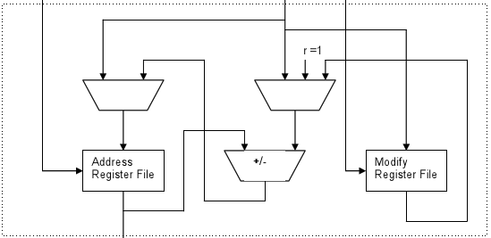

A CPU (központi feldolgozóegység) más néven processzor, ill. mikroprocesszor, a számítógép „agya”, azon egysége, amely az utasítások értelmezését és végrehajtását vezérli, félvezetős kivitelezésű, összetett elektronikus áramkör.
Míg a processzor fogalma már korábban ismert volt, a mikroprocesszor megjelenését csak a félvezetős technológia és az integrált áramkörök kifejlesztése tette lehetővé, az 1970-es évek elején.
A processzor alatt általában mikroprocesszort értünk, régebben a processzor sok különálló áramkör volt, ám a mikroprocesszorral sikerült a legfontosabb komponenseket egyetlen szilíciumlapkára integrálni.
ALU: (Arithmetic and Logical Unit – Aritmetikai és Logikai Egység). A processzor alapvető alkotórésze, ami alapvető matematikai és logikai műveleteket hajt végre.
Sebessége növelhető egy koprocesszor (FPU, Floating Point Unit, lebegőpontos műveleteket végző egység) beépítésével.
Az FPU korábban külön részegység volt, manapság a processzorok mindegyike beépítve tartalmazza.

AGU: (Address Generation Unit) - a címszámító egység, feladata a programutasításokban található címek leképezése a főtár fizikai címeire és a tárolóvédelmi hibák felismerése.
CU: (Control Unit a.m. vezérlőegység vagy vezérlőáramkör). Ez szervezi, ütemezi a processzor egész munkáját.
Például lehívja a memóriából a soron következő utasítást, értelmezi és végrehajtatja azt, majd meghatározza a következő utasítás címét.

A regiszter a processzorba beépített nagyon gyors elérésű, kis méretű memória.
A regiszterek addig (ideiglenesen) tárolják az információkat, utasításokat, amíg a processzor dolgozik velük.
A mai gépekben 32/64 bit méretű regiszterek vannak. A processzor adatbuszai mindig akkorák, amekkora a regiszterének a mérete, így egyszerre tudja az adatot betölteni ide.
Például egy 32 bites regisztert egy 32 bites busz kapcsol össze a RAM-mal.
A regiszterek között nem csak adattároló elemek vannak (bár végső soron mindegyik az), hanem a processzor működéséhez elengedhetetlenül szükséges számlálók, és jelzők is. Ilyen például :
Buszvezérlő: A regisztert és más adattárolókat összekötő buszrendszert irányítja. A busz továbbítja az adatokat.
A Cache modern processzorok fontos része a cache (gyorsítótár). A cache a processzorba, vagy a processzor környezetébe integrált memória,
ami a viszonylag lassú rendszermemória-elérést hivatott kiváltani azoknak a programrészeknek és adatoknak előzetes beolvasásával, amikre a végrehajtásnak közvetlenül szüksége lehet.
A mai PC processzorok általában két gyorsítótárat használnak, egy kisebb (és gyorsabb) első szintű (L1) és egy nagyobb másodszintű (L2) cache-t. A gyorsítótár mérete ma már megabyte-os nagyságrendű.
Tokozáson a processzor külső burkát, érintkezőinek kialakítását értjük.
Három elterjedt fajtája van:
az előző kialakításokkal szemben a tűsor az alaplapon helyezkedik el, míg a processzoron csak úgynevezett érintőpadok találhatóak.
itt a csatlakozók a négyzet alakú tok alján helyezkednek el. Ezen belül is lehet:
a tok inkább egy kazettára hasonlít, az érintkezők (tűk) az alján vannak.
1. Kérdés:
Mit vezérel a processzor?
2. Kérdés:
Minek a rövidítése az ALU?
3. Kérdés:
Hol található a tűsor az LGA-tokozásban?
4. Kérdés:
Hol található a register